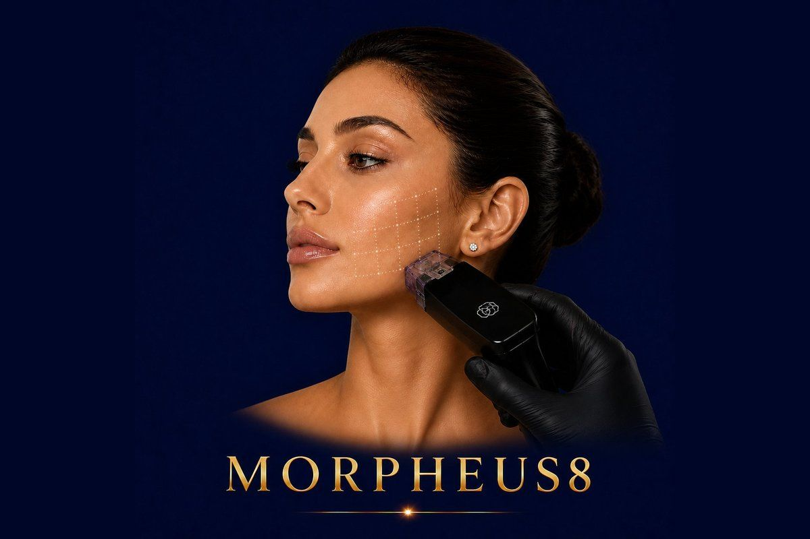

Skin Rejuvenation
RF microneedling from InMode — deep collagen remodeling for tighter, smoother, scar-free skin from the inside out.
✓ Full medical content — verified for SEO and patient information.

About
Morpheus8 is a fractional radiofrequency (RF) microneedling device from InMode — the world's most respected medical aesthetic technology company and the same manufacturer behind Forma and BodyTite. It combines two of the most effective technologies in modern dermatology — microneedling and radiofrequency — into a single device that addresses skin tightening, collagen remodeling, acne scars, stretch marks, and skin texture issues all at once. The device works by precisely delivering tiny insulated microneedles into the deeper layers of the skin, then releasing controlled radiofrequency energy from the needle tips. This dual mechanism creates micro-channels that trigger natural healing while simultaneously heating the deeper tissue to stimulate massive new collagen and elastin production — far beyond what microneedling or RF alone can deliver. Morpheus8 is FDA-approved and considered the gold standard for non-surgical skin remodeling. It works on the face, neck, jawline, body, and is one of the very few non-laser treatments that's effective on darker skin tones without pigmentation risk.
Why It Works
The Process
90 minutes depending on the area treated: 1
Consultation & assessment Your doctor evaluates your skin concerns, identifies target areas, and determines the appropriate needle depth and energy level for your case. 2
45 minutes before the session to ensure your comfort
This is standard for all Morpheus8 sessions. 3
Morpheus8 application The Morpheus8 handpiece delivers tiny microneedles into the skin at the precise depth selected for your concern (ranging from 1mm to 4mm)
As the needles enter the tissue, RF energy is delivered through the needle tips, simultaneously creating micro-channels and heating the deeper layers
Most patients tolerate the session well thanks to numbing; you may feel pressure and warmth. 4
Post-treatment care After the session, a soothing serum and SPF is applied
3 days
Tiny grid-like marks from the needles may be visible for a few days
This is normal and expected
6 months as new collagen is built
Most patients see optimal results from a structured series of sessions designed around their specific goals
Who It's For
Safety First
Quality You Can Trust
Treatment Comparisons
Traditional microneedling uses needles to create micro-injuries that trigger collagen production — useful for texture and surface issues, but limited depth and no thermal effect. Morpheus8 adds radiofrequency heat at the deepest dermal layers, producing far more powerful collagen remodeling and meaningful skin tightening that microneedling alone cannot achieve.
Fractional laser resurfacing is highly effective for texture and scars — but uses heat through the skin surface, carrying real pigmentation risk for darker skin tones and requiring significant downtime. Morpheus8 delivers RF energy directly into the dermis through tiny needle channels, bypassing the surface layer almost completely — equally or more effective on scars, but safer for darker skin and faster recovery.
Forma uses surface radiofrequency for gentle, no-downtime skin tightening — comfortable and ideal for maintenance. Morpheus8 uses needle-delivered RF for deeper, stronger remodeling — better results, but with a few days of downtime. Many patients combine both: Morpheus8 for transformation, Forma for maintenance.
HIFU uses ultrasound to reach the deep SMAS layer for non-surgical lifting — strong lifting effect, but doesn't treat acne scars or skin texture. Morpheus8 works at a different depth (the dermis) and excels at scars and skin remodeling. Together they cover both lifting and texture in a complete plan.
Subcision and PRP are classic approaches for acne scars — useful, but require multiple sessions and have variable outcomes. Morpheus8 is considered the modern gold standard for acne scarring, often producing more consistent and pronounced improvement, especially when used in a structured 3-session protocol.
Investment
Morpheus8
The price of a Morpheus8 session at Hollywood Clinic is set after a free consultation and depends on: Treatment area — face, full face + neck, jawline only, body areas (abdomen, arms, thighs).
Final pricing is determined after a free consultation, because every case is different.
Book Free ConsultationWhy Hollywood Clinic
Dr. Marwa Magdy — Aesthetic Dermatologist & Advanced Injector. Morpheus8 is her signature device with 5,000+ cases performed — one of the highest case volumes in Egypt. She is the go-to doctor for advanced Morpheus8 protocols, especially complex acne scarring, full-face remodeling, and combination treatments
Dr. Rana Safwat — Dermatology, Laser & Non-Surgical Aesthetics Consultant, 12+ years of experience. Ideal for patients who want Morpheus8 integrated into a wider skincare plan combining lasers, injectables, and Morpheus8 in a structured long-term protocol
FAQ